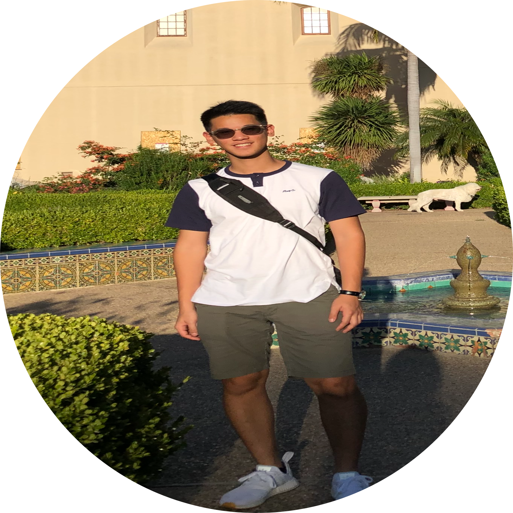
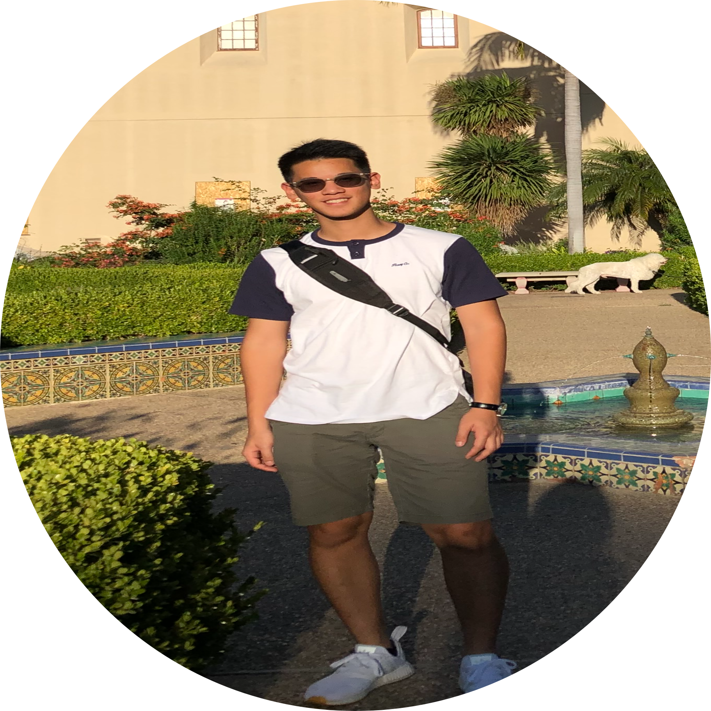

UNIVERSITIES
Masked Heroes Initiatives has branches at these universities.
University of California, Los Angeles


 


Darlene Kabigting, Co-President
I am a second year student at UCLA, currently pursuing a degree in Biochemistry. In the future, I plan to work in healthcare or a career that allows me to make advances in medicine. As a member of MHI, I oversee the UCLA branch as co-president along with organizing mask donations as an Operations committee member. Joining MHI has allowed me to work with underprivileged and underrepresented communities, something I have been passionate about my whole life. In my free time, I like to journal, listen to music, play video games and go on adventures!Megan Vu, Co-President
I am a second-year attending the University of California, Los Angeles (UCLA) as a Biology major and Asian American Studies minor. I hope to pursue a future career in the medical field with an interest in pediatrics. As an undergraduate, I am passionate about helping others through clinical work and providing an impact for underprivileged communities in Asian Pacific Health Corps. I am also currently involved in Foundations Choreography as the Showcase Chair and SEA CLEAR as part of the mentorship workgroup. In my free time, I love to bullet journal, play the piano, and exercise. My role in MHI is to oversee the UCLA branch as well as organize and purchase PPE for areas in need. Contact me at megantsvu@g.ucla.edu with any inquiries or opportunities.Rainey Williams, Vice President
Hello! My name is Rainey Williams and I am a second-year studying Linguistics and Computer Science at UCLA. In the future I hope to work in the field of computational linguistics. I organize wholesale purchases for masks and other supplies for MHI. I firmly believe in the mission of MHI and I’m confident in our team’s ability to make a difference during this pandemic. In my freetime I like to draw, watch documentaries, and explore LA (pre-covid times of course!).Jae Jeon, Treasurer
Hey! My name is Jae Jeon and I am a second-year Psychobiology major at UCLA. I am staying in South Korea for the fall quarter. In the future, I hope to pursue a career in medicine, specifically in adolescent psychiatry. My role in MHI is to organize the receipts and keep track of all sources of income and spending at MHI and the UCLA branch. Outside of MHI, I am currently assisting research in stroke and stroke recovery, and I work part-time at a Vietnamese restaurant. I also work as a TA at an English academy, where I tutor middle school kids after school. In my free time, I like to eat outside with my friends, exercise, or watch TV shows.Nitish Patel, Head of Social Media
Hey there! My name is Nitish Patel and I’m a second year Neuroscience major at UCLA, currently based in Dallas, Texas. I hope to one day pursue a career in degenerative brain disease research, but for the time being I’m working with MHI to create social media posts to spread awareness of the COVID-19 virus and its socioeconomic impacts worldwide. In my free time, I like to watch (and play!) soccer and play the piano!Carolynn Pham, Head of External Finance
I am a second year pursuing a Bachelor of Science degree in Psychobiology with a minor in Gerontology at University of California, Los Angeles. I wholly enjoy working with elders, and I hope to make my passion for geriatric medicine into a career in the future, alongside working to raise awareness on elder abuse, and contributing wholeheartedly to geriatric’s research to make a difference. Outside of MHI, I am in a program that supports and cares for patients with dementia, an internship supporting surgical doctors in the hospital, a research lab on neurological brain diseases, and a Pre-Medical club. In my free time, I enjoy reading, exploring philosophy, poetry, spending quality time, and helping others.Adila Ahmed, External Finance Associate
Hello! My name is Adila Ahmed and I am an incoming freshman at UCLA pursuing a Bachelor's degree in Biochemistry on the premed track. I plan to pursue a career in the medical field with a potential focus in neurology or cardiology. At the high school level, I was involved in Mock Trial, Speech and Debate, TedX, Science Olympiad and various other extracurriculars that allowed me to work on my public speaking and communication skills, strengthen my leadership abilities, and discuss important topics in our world. As a part of External Finances in MHI, I mainly work on fundraising, applying for grants, and communicating with businesses to cooperate with. Outside of academics, I enjoy mentoring middle school students in Los Angeles county and tutoring students in STEM. In my free time, I enjoy dancing, music, playing tennis, watching a lot of Asian dramas, and exploring my Indian heritage!Hanna Shon, Finance Associate
Andrew Liang, Operations Associate
Hi! My name is Andrew Liang and I am a second year undergraduate student at UCLA majoring in Molecular Cell and Developmental Biology (MCDB). As a part of the MHI Operations committee, I actively work alongside Operation board members to organize wholesale purchases, contact suppliers, and deliver masks to places in need throughout SoCal. As Covid-19 continues to impact the lives of millions, MHI will not cease to provide aid until the day Covid-19 is defeated. Outside of MHI, I serve as an honors mentor for the College Scholars Program at UCLA. I am also a part of a research team at UCLA that examines healthcare literacy in underrepresented communities such as Asians and Pacific Islanders in LA. In my free time, I enjoy painting, writing journals, and watching movies!Anya Holbrook, Finance Associate
Hi, my name is Anya Holbrook and I am a second year Molecular, Cell, and Developmental Biology major at UCLA, currently studying in the Bay Area for the fall quarter. In the future, I hope to pursue either a career in pediatrics or genetics, potentially genetic medicine. For the time being, I am working with MHI as a member of the external finance team in order to give back to my community and help make a difference during the COVID-19 pandemic. In my free time, I enjoy cooking, painting, watching and doing gymnastics, and exploring the Bay!University of California, Irvine


Natalie Chen, President
Hello! I am currently a second-year student at UCI, majoring in Public Health sciences. I joined MHI in hopes that my teammates and I can have a significant impact in reducing the spread of Covid-19 in disadvantaged communities. As co-president, my responsibilities included initiating the new club registration process at UCI and assigning specific roles to incoming members. I have loved collaborating with others on this very important goal and am excited to meet more newcomers joining our team. Outside of MHI, I have enjoyed volunteering at hospitals, assisting children in after-school programs, swimming, and exploring new places in SoCal. In the future, I envision myself pursuing a career in epidemiology and disease prevention. Overall, I hope I can dedicate my career to mitigating the quantity of preventable deaths on a national, or even global scale.Julian Shin, Treasurer
Liz Wiriadinata, Board Member
Ahoy there! I am a 2nd year UCI Biological Sciences Major, currently residing in my family home in sunny SoCal. I’m an aspiring cardiologist by day, Minecraft player by night. During the in-between, I spend my time tutoring middle and high school students in biology, chemistry, and English. I’ve also been fortunate enough to do research in the cardiology division of Kaiser Riverside on possible new treatments for atrial fibrillation patients. In my other-other spare time, I enjoy writing, drawing and embroidery (better for stitching up future patients, I like to say!)Callista Gill, Board Member
Aidan Arthur Gelston, Board Member
University of California, San Diego